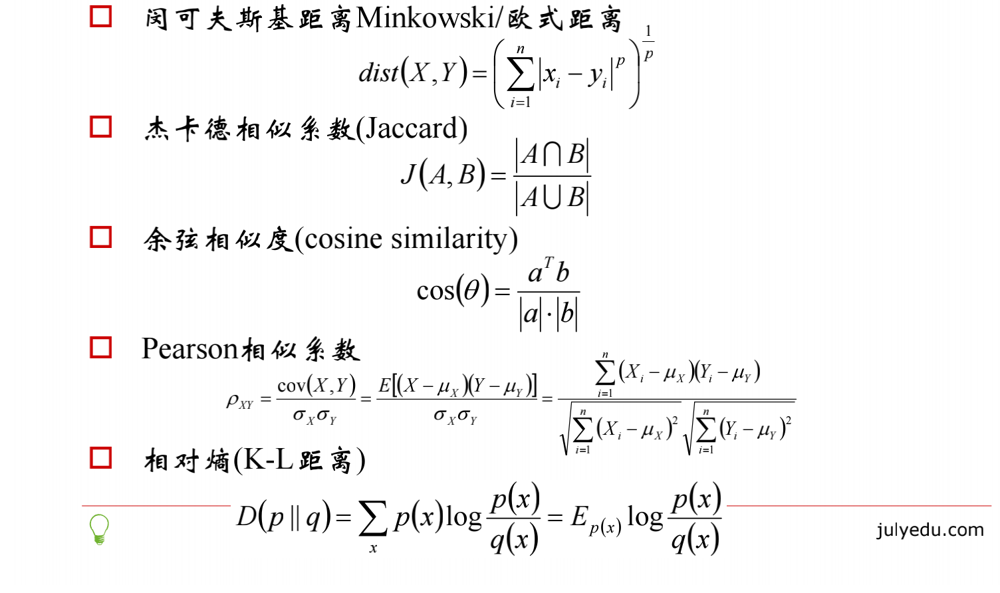
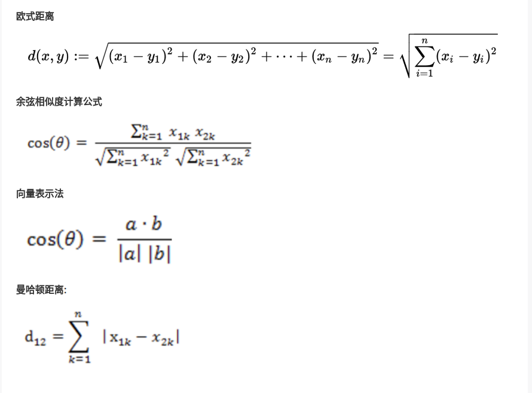
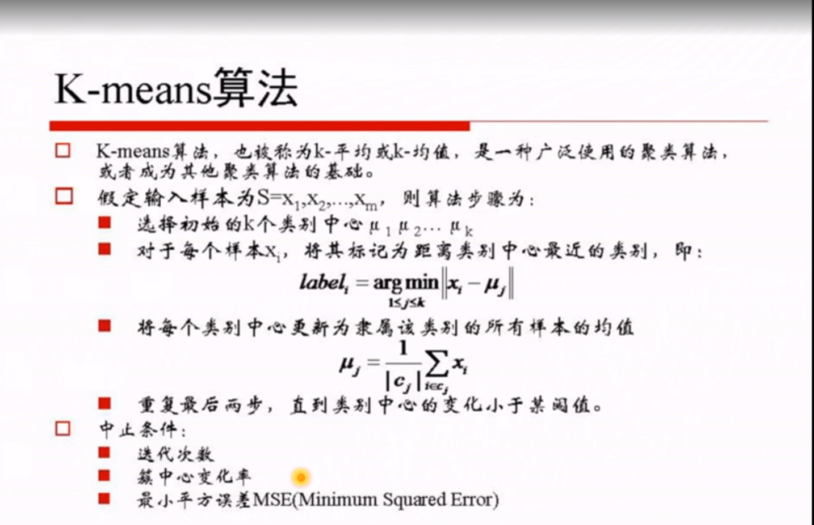

问题
在图的左边有一些点，我们用肉眼可以看出来有四个点群，但是我们怎么通过计算机程序找出这几个点群来呢？于是就出现了我们的K-Means算法

算法概要
这个算法其实很简单，如下图所示：

从上图中，我们可以看到，A, B, C, D, E 是五个在图中点。而灰色的点是我们的种子点，也就是我们用来找点群的点。有两个种子点，所以K=2。
然后，K-Means的算法如下：
- 随机在图中取K（这里K=2）个种子点。
- 然后对图中的所有点求到这K个种子点的距离，假如点Pi离种子点Si最近，那么Pi属于Si点群。（上图中，我们可以看到A,B属于上面的种子点，C,D,E属于下面中部的种子点）
- 接下来，我们要移动种子点到属于他的“点群”的中心。（见图上的第三步）
- 然后重复第2）和第3）步，直到，种子点没有移动（我们可以看到图中的第四步上面的种子点聚合了A,B,C，下面的种子点聚合了D，E）。
- 这个算法很简单，但是有些细节我要提一下，距离的公式。我重点想说一下“求点群中心的算法”
 
K-Means ++ 算法
K-Means主要有两个最重大的缺陷——都和初始值有关：
- K 是事先给定的，这个 K 值的选定是非常难以估计的。很多时候，事先并不知道给定的数据集应该分成多少个类别才最合适。（ ISODATA 算法通过类的自动合并和分裂，得到较为合理的类型数目 K）
- K-Means算法需要用初始随机种子点来搞，这个随机种子点太重要，不同的随机种子点会有得到完全不同的结果。（K-Means++算法可以用来解决这个问题，其可以有效地选择初始点）
我在这里重点说一下 K-Means++算法步骤：
- 1,先从我们的数据库随机挑个随机点当“种子点”。
- 2,对于每个点，我们都计算其和最近的一个“种子点”的距离D(x)并保存在一个数组里，然后把这些距离加起来得到Sum(D(x))。
- 3,然后，再取一个随机值，用权重的方式来取计算下一个“种子点”。这个算法的实现是，先取一个能落在Sum(D(x))中的随机值Random，然后用Random -= D(x)，直到其 <=0，此时的点就是下一个“种子点”。
- 4,重复第（2）和第（3）步直到所有的K个种子点都被选出来。
- 进行K-Means算法。
